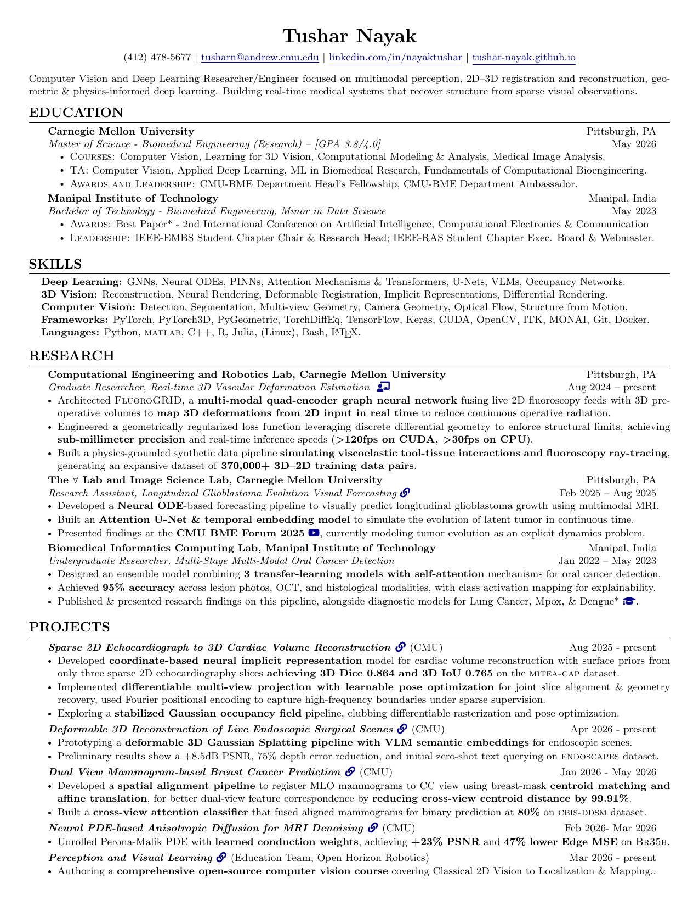

Project repositories
Selected work from the resume
These buttons point to the matching GitHub repositories. FluoroGRID is private for now, but the link is included.
Sparse 2D Echocardiograph to 3D Cardiac Volume Reconstruction
Cardiac reconstruction
Neural ODE Forecasting for Glioblastoma Evolution
Brain MRI dynamics
Neural Anisotropic Diffusion Network for MRI Denoising
Denoising and restoration
Dual-View Mammography Breast Cancer Prediction
Clinical notebook
FluoroGRID
Private repo, manuscript underway